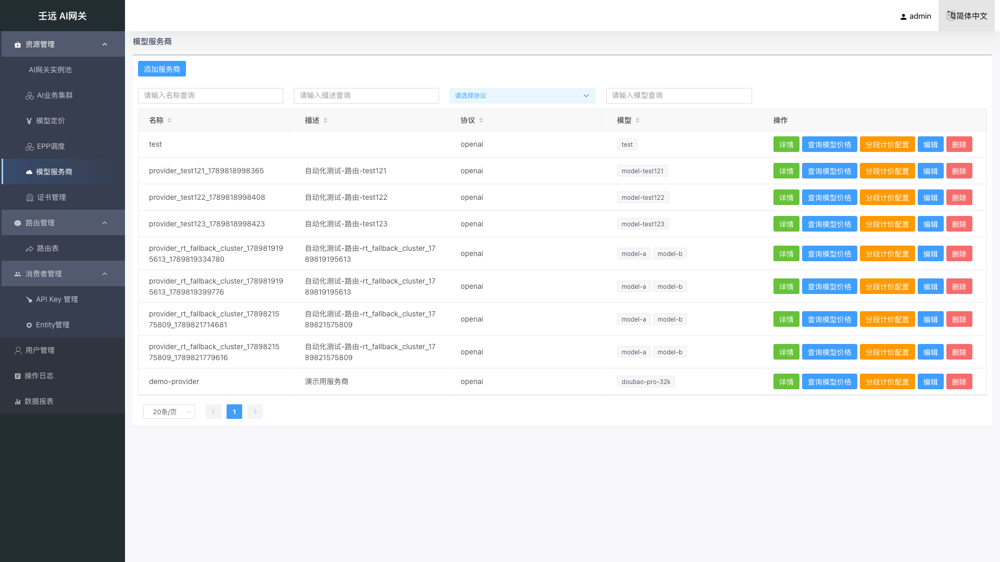
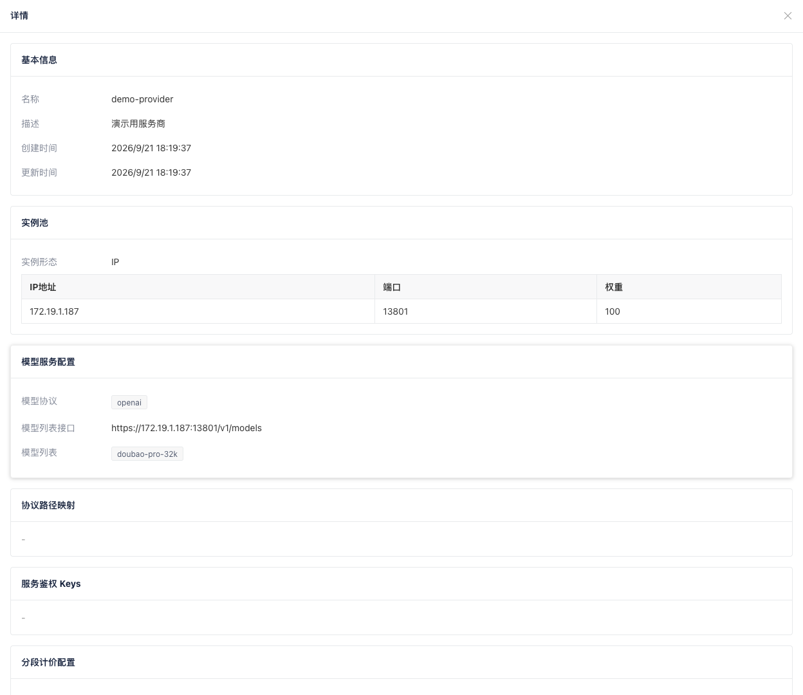
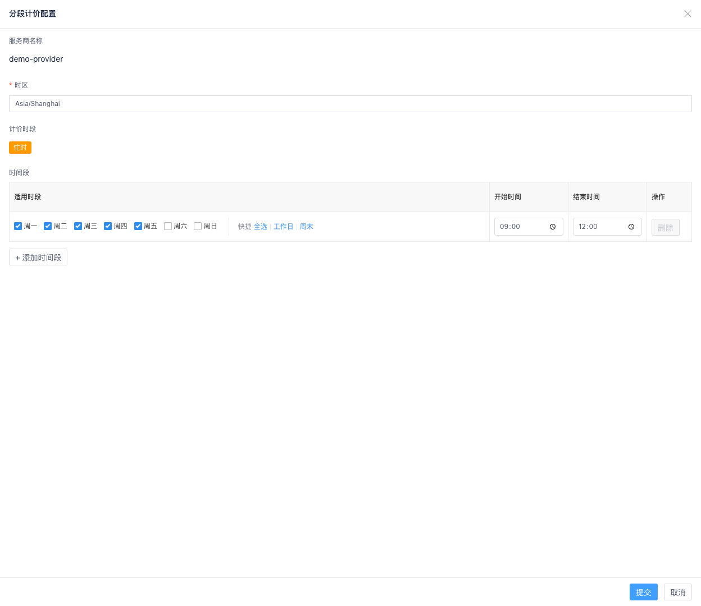

03 资源管理：模型服务商
模型服务商是后端模型服务接入层的统一抽象：持有实例池（IP 或服务商域名）、模型协议、模型发现端点、服务鉴权 Key 明文与模型列表。业务集群通过「所属服务商」引用服务商，不再在集群向导中重复维护实例地址与 Key 明文。
与业务集群的关系：先创建服务商（定义「连哪里、用什么协议、有哪些模型、Key 是什么」），再创建业务集群（定义「转发策略、超时、健康检查、选用哪些模型与 Key」）。一个服务商可被多个集群引用。
首次接入最小配置
| 分区 | 必填项 |
|---|---|
| 基本信息 | 服务商名称 |
| 实例池 | IP 或服务商域名 + 端口 + 权重（单实例填 100） |
| 模型服务配置 | 模型协议（至少一种）、模型列表接口路径、模型列表（必填，至少 1 个模型；点「获取」拉取、输入后回车添加，或「批量添加」粘贴多个名称；须提交表单才持久化） |
| 服务鉴权 Keys | 公有云等需鉴权的服务商通常必填 |
3.1 服务商列表
进入 资源管理 → 模型服务商，展示当前已创建的服务商列表。

表格列说明：
| 列名 | 说明 |
|---|---|
| 名称 | 服务商唯一标识，支持按名称搜索和排序 |
| 描述 | 服务商说明 |
| 协议 | 支持的模型访问协议，如 openai、anthropic；多协议以逗号展示 |
| 模型 | 已配置模型列表；最多展示 2 个 Tag，超出显示 +N，悬停 Tooltip 查看完整列表 |
| 操作 | 详情、查询模型价格、分段计价配置、编辑、删除；只读视角下隐藏「分段计价配置」「编辑」「删除」，仅保留「详情」「查询模型价格」 |
列表上方有「添加服务商」按钮。
前端筛选：列表一次拉取全量数据，名称 / 描述 / 协议 / 模型的搜索与排序均在浏览器端完成。
只读视角（见 1.2.6 只读视角）：隐藏「添加服务商」「分段计价配置」「编辑」「删除」；「详情」「查询模型价格」保留。
查询模型价格
点击「查询模型价格」，跳转到模型定价页并按该服务商名称（provider 字段）筛选列表。若无定价记录，提示「未找到提供商 {provider} 的模型定价」。服务商名称须与定价表中的 provider 一致，详见 06 章。
删除服务商
点击「删除」后确认。若该服务商仍被业务集群引用，删除失败并提示「删除失败，该服务商可能仍被集群引用」。需先在相关集群中更换「所属服务商」或删除集群后再删。
只读视角下「删除」入口隐藏，无法删除服务商。
3.2 创建 / 编辑服务商
点击「添加服务商」或操作列「编辑」，右侧弹出抽屉表单，分为以下 Card 分区：
- 基本信息
- 实例池
- 模型服务配置（模型协议、模型列表接口、模型列表）
- 协议路径映射
- 服务鉴权 Keys
编辑时名称字段灰色禁用；密钥留空表示保持原值不变。
只读视角下「添加服务商」「编辑」入口隐藏，无法创建或编辑服务商。

3.3 基本信息
| 字段 | 必填 | 校验规则 | 说明 |
|---|---|---|---|
| 名称 | 是 | 1-64 字符；仅允许字母、数字、点(.)、下划线(_)、中划线(-)；不能以点、下划线、中划线开头或结尾；不能包含空白字符；创建时不能与已有服务商重名 | 唯一标识，创建后不可修改 |
| 描述 | 否 | 不超过 256 字符；不能包含控制字符 | 描述用途 |
3.4 实例池
与旧版集群向导中的「实例配置」相同，支持 IP 模式 与 服务商域名模式 二选一。
IP 模式（默认）
自建机房 / 私有化部署（vLLM / Xinference / Ollama 等）。可「+ 创建」多行实例。
| 字段 | 必填 | 默认值 | 校验规则 | 说明 |
|---|---|---|---|---|
| IP 地址 | 是 | 空 | 合法 IPv4 / IPv6；实例间 IP 不能重复 | 后端实例地址 |
| 端口 | 是 | 80 | 1-65535 | 服务端口 |
| 权重 | 是 | 首行 100，新增行 0 | 0-100；所有实例权重之和须等于 100 | 流量分配权重 |
服务商域名模式
对接公有云模型服务商。只填一个域名（如 api.deepseek.com），端口随协议默认（https→443，http→80），权重固定 100。不支持多地址，不能与 IP 模式混用。
| 字段 | 必填 | 说明 |
|---|---|---|
| 服务商域名 | 是 | 如 api.deepseek.com |
3.5 模型服务配置
| 字段 | 必填 | 默认值 | 说明 |
|---|---|---|---|
| 模型协议 | 是 | 空 | 多选；支持 openai（OpenAI 兼容）、anthropic（Claude Messages API）、gemini（Google Gemini API）；至少选一种 |
| 模型列表接口 | 否 | https://{实例地址}/v1/models（gemini 协议默认 /v1beta/models） | 由协议 + 实例地址（只读，来自实例池）+ URI 路径组成；路径须以 / 开头，默认 /v1/models（gemini 为 /v1beta/models） |
| 模型列表 | 是 | 空 | 标签多选，至少 1 个模型；可「获取」拉取、输入后回车添加或「批量添加」粘贴，详见下方「模型列表」 |
系统根据所选「模型协议」自动决定调用模型发现接口时的认证头风格（如
openai使用Authorization: Bearer，anthropic使用x-api-key，gemini使用x-goog-api-key）。不再支持在模型列表接口中自定义AuthorizationHeader。
模型列表
模型列表为必填项（至少 1 个模型），标签左侧有红色必填星号 *。可通过「获取」从上游拉取、在下拉框中输入模型名后按回车添加，或点击「批量添加」一次粘贴多个模型名。
校验规则：
- 至少 1 个模型：提交时若列表为空，提示「模型列表为必填项，请至少添加 1 个模型」
- 元素非空：模型名不能为空字符串
- 元素不可重复：同一服务商内模型名不能重复
| 操作 | 说明 |
|---|---|
| 「获取」 | 调用 POST /providers/tools/discover-models 无状态发现接口，用当前表单的协议、实例池、模型列表路径与首个 Key 拉取上游模型并覆盖回填到下拉框 |
| 「批量添加」 | 打开文本框，按行或用逗号 / 中文逗号 / 分号 / 空白分隔粘贴多个模型名；确认后合并进现有列表（去重、跳过已有项），不覆盖 |
| 下拉框粘贴 | 若剪贴板文本可拆出 2 个及以上模型名，会自动拆成多个 Tag；单个名称仍按回车添加 |
| 置灰条件 | 未选择模型协议，或实例池无有效地址时「获取」按钮禁用 |
| 提交 | 「获取」或「批量添加」成功后不会自动保存，须点击抽屉底部「提交」才写入服务商资源 |
常见坑：点「获取」无反应或失败，先检查实例地址、端口、协议与 Key 是否正确，以及 BFE / API Server 能否访问该后端。
3.6 协议路径映射
当一个服务商支持多种模型协议（如同时勾选 openai 与 anthropic），且各协议的上游 API 基路径不同时，可通过 protocol_paths 为每种协议分别指定基路径。
配置值即该协议官方 SDK base_url 的 path 部分：openai 含 /v1 尾（OpenAI SDK 会向 base_url 拼接 /chat/completions 等），anthropic 不含 /v1（Anthropic SDK 自行拼接 /v1/messages）。
| 字段 | 必填 | 默认值 | 校验规则 | 说明 |
|---|---|---|---|---|
| 协议 | 是 | — | 须在已选的 模型协议 范围内 | 下拉选择，选项来自当前表单已勾选的模型协议 |
| 路径 | 是 | 协议默认路径 | 以 / 开头，不以 / 结尾；不含 ? $ # .. | 上游 API 基路径，如 /v1、/api/openai |
表格操作：
| 操作 | 说明 |
|---|---|
| 「+ 添加映射」 | 在表格中新增一行：协议下拉框 + 路径输入框 + 删除按钮 |
| 「删除」 | 移除该行映射；清空全部映射后保存，将显式提交空对象以禁用路径改写 |
改写规则：
anthropic：请求/v1/messages（及其子路径）改写为{anthropic}/v1/messages。openai：请求命中标准端点（/chat/completions、/completions、/embeddings、/models、/responses等）时，先剥离可选的/v1前缀再拼接到基路径——/v1/chat/completions与/chat/completions均改写为{openai}/chat/completions。即客户端入口带不带/v1都不影响最终上游路径，兼容 Trae 等直连base_url的 OpenAI 兼容客户端。- 未配置（或对应协议无条目）时请求路径原样转发；未命中 openai 标准端点的路径（服务商原生路径、自定义路径、
/v10/xxx、/v1beta/...）永不改写，客户端以服务商原生路径访问的透传模式不受影响。 gemini不支持路径改写（其原生路径即标准路径，透传已可用）。
使用场景：例如 deepseek 同时支持
openai与anthropic协议，可分别配置{"openai": "/v1", "anthropic": "/anthropic"}。未配置映射的协议按上述「改写规则」走默认行为。
3.7 服务鉴权 Keys
当后端模型服务需要鉴权时配置。Key 明文仅保存在服务商资源中，业务集群通过 Key 名称引用。
| 字段 | 必填 | 校验规则 | 说明 |
|---|---|---|---|
| Key 名称 | 条件必填 | 1-128 字符；同一服务商内不能重复 | 行内任一字段填写后本行必填；供集群侧下拉选择 |
| Key 值 | 条件必填 | 1-512 字符 | 实际 API Key；编辑时留空表示不修改 |
- 支持「+ 添加 Key」增加行、「删除」移除行。
- 空行不参与校验，提交时自动过滤。
- 编辑模式下已配置的 Key 会提示「已配置 Key，如需修改请输入新 Key；留空则保持不变」。
- 详情/查看时 Key 值脱敏展示；只读视角下由后端直接返回掩码值（
lib/xmask，如abcd********wxyz），掩码值不可用于鉴权。
3.8 查看详情
点击「详情」打开只读抽屉，展示基本信息（含创建时间、更新时间）、实例池、模型服务配置（模型协议、模型列表接口、模型列表）、协议路径映射、服务鉴权 Keys（Key 值脱敏），以及分段计价配置摘要（时区、忙时时间段表；未配置时显示「未配置」）。

3.9 分段计价配置
点击列表操作列「分段计价配置」，打开独立抽屉，用于配置该服务商的忙时（peak）时间段，供模型定价中的分时段价格匹配使用。只读视角下该入口隐藏。

| 字段 | 必填 | 说明 |
|---|---|---|
| 服务商名称 | — | 只读 |
| 时区 | 是 | IANA 时区名，如 Asia/Shanghai；须通过合法性校验 |
| 计价时段 | — | 只读展示「忙时」标签；初期仅支持 peak |
| 时间段 | 是 | 表格配置适用星期、起止时间；支持快捷「全选 / 工作日 / 周末」；至少保留 1 行；同一 tier 内多段为「或」关系 |
时间规则：
- 起止时间格式
HH:MM；结束时间须大于开始时间；跨午夜请拆成两段。 - 适用时段为空表示每天；星期取值 0=周日 … 6=周六。
- 同一 tier 内多个时间段按「或」匹配；
start <= 当前时刻 < end（左闭右开）。
提交后调用 PUT /providers/{name}/pricing-tiers 单独保存，不影响服务商其他字段。
3.10 注意事项
- 服务商名称创建后不可修改，建议与定价表
provider字段保持一致，便于费用核算与「查询模型价格」跳转。 - 修改实例池或 Keys 会影响所有引用该服务商的集群转发行为，请在低峰期操作。
- 删除前确认无集群引用；
model-prices中存在同名provider不会阻止删除服务商。 - 模型协议与集群转发路径须匹配：例如仅支持
openai的服务商，不应承载 Anthropic 风格请求。